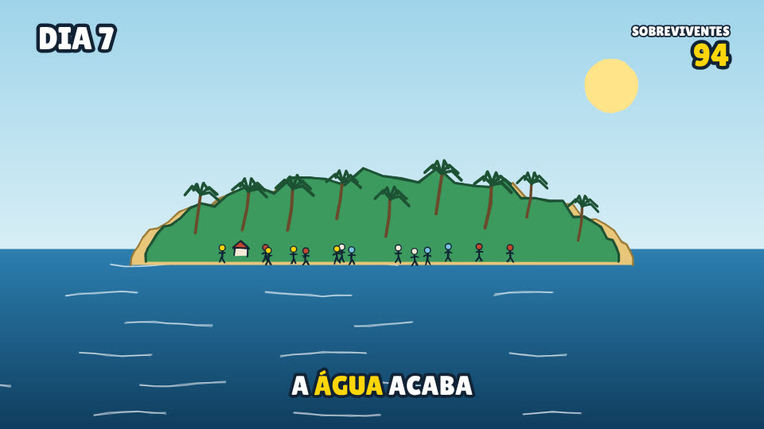

E se você fizesse os seus próprios vídeos "E se..."?
Aprenda o processo completo dos vídeos animados de ilhas, linhas do tempo e historinhas. Sem aparecer, sem câmera e sem saber desenhar.
- 16 aulas + 3 bônus
- 5 skills do Claude
- Shorts e vídeos longos
- Acesso na hora
Veja o que você vai fazer
Três vídeos curtos feitos com o processo do curso, do primeiro quadro ao arquivo final. Toque em "Ativar som" para ouvir a trilha, que também foi composta em código.
Os três foram desenhados em código e renderizados quadro a quadro a 12 fps no Chromium headless, com legenda de palavra amarela e trilha gerada em numpy. Os seus vão ter narração, que entra no módulo 2.
Por que esse formato vale a pena
Você não aparece
Nada de câmera, cenário ou microfone caro. A voz é gerada e os personagens são desenhados em código.
Short e longo da mesma ideia
O mesmo roteiro, os mesmos personagens e as mesmas cenas viram um vídeo de 8 minutos e um short vertical.
O segundo vídeo sai mais rápido
Ilha, personagens, placar e legenda são reaproveitados. Cada vídeo novo é mais roteiro e menos montagem.
Quase todo o custo é a voz
Uns 7 mil créditos de narração para 8 minutos. O resto das ferramentas é gratuito e open source.
Não envelhece
"E se a Lua sumisse?" interessa hoje e daqui a cinco anos. O vídeo continua sendo encontrado na busca.
Feito para gerar comentários
Todo roteiro termina com uma pergunta direta para o espectador, e o curso mostra como fixar essa pergunta.
Arraste a linha do tempo
Cada cena é uma função do tempo: dá o segundo, ela desenha o quadro. Mexa no controle e veja a mesma cena em qualquer ponto da história, sem renderizar nada.
Téo planta a primeira semente no morro pelado.
Bônus: 5 skills do Claude
Uma skill é um arquivo que ensina o Claude a fazer uma tarefa sempre do mesmo jeito. Você instala uma vez e, a partir daí, cada etapa do vídeo é um comando no Claude Code.
> /roteiro-e-se E se a Lua sumisse hoje? short Roteiro (812 caracteres, ~812 créditos): E se a *Lua* sumisse hoje à noite? [HOJE] Ela puxa o *mar* duas vezes por dia. [PLACAR: MARÉ ALTA 2,0 m] [DIA 1] Sem ela, as *marés* ficam bem menores. [PLACAR: MARÉ ALTA 0,7 m] ...
/roteiro-e-seEscreve o roteiro com linha do tempo, placar, virada e pergunta final, já com as palavras-chave marcadas./cenas-p5Cria cada cena no kit de animação reaproveitando seus personagens e o cenário./legendas-assGera e grava as legendas com palavra amarela, no formato certo para short ou longo./mixagemJunta voz, trilha e efeitos com a música abaixando sozinha e o volume em -16 LUFS./publicarEntrega título, descrição com capítulos e comentário fixado prontos para colar.
Do roteiro ao quadro
Um trecho real do caminho: o roteiro marca o salto no tempo, o faster-whisper diz em que segundo a frase acontece, e a cena desenha aquele momento.
1. O roteiro
[DIA 7] No sétimo dia, a *água* acabou. *Rafa* achou uma nascente no alto do *morro*. [PLACAR: SOBREVIVENTES 94]
Marcadores entre colchetes viram cena e placar. Os asteriscos viram palavra amarela na legenda.
2. O tempo de cada palavra
{ "inicio": 8.40,
"fim": 10.12,
"texto": "No sétimo dia, a água acabou.",
"palavras": [
{ "p": "água", "inicio": 9.31,
"fim": 9.66 } ] }
O faster-whisper devolve o segundo exato. A cena do Dia 7 começa em 8,40 s.
3. O quadro

O Claude escreve a função da cena, o render salva um PNG a cada 1/12 de segundo e o ffmpeg junta tudo.
Sete etapas, sempre na mesma ordem
Cada etapa gera um arquivo que a próxima usa. Você aprende uma de cada vez e, no fim do curso, tem um vídeo pronto para publicar.
Ideia e roteiro
A fórmula "E se...": uma pergunta extrema, a linha do tempo do Dia 1 ao Ano 100, personagens fictícios, um placar, a virada e a pergunta final que puxa os comentários.
Narração
Voz gerada no ElevenLabs e acelerada entre 1,06x e 1,15x com o filtro
atempodo ffmpeg, sem deixar a voz fina.Tempo de cada palavra
O faster-whisper ouve a narração e devolve o segundo exato de cada palavra e de cada frase. Esse arquivo sincroniza o vídeo inteiro.
Animação
Cenas em p5.js com traço de pincel (p5.brush), escritas com o Claude e renderizadas no Chromium headless a 12 fps pelo kit open source Claude Animation Base.
Legendas
Um script gera o arquivo
.asscom as palavras-chave em amarelo, e o ffmpeg grava a legenda direto no vídeo.Áudio
Voz, trilha e efeitos numa mixagem só, com a música abaixando sozinha quando a voz fala, normalizada em -16 LUFS.
Final
Encode em 1080p para o vídeo longo ou 1080x1920 para o short, thumbnail renderizada pelo próprio kit, título, descrição e capítulos.
Quanto dá trabalho, em números
O render roda sozinho enquanto você faz outra coisa. O tempo que você gasta de verdade é no roteiro e na revisão das cenas.
Short
- Duração
- cerca de 55 s
- Quadros
- uns 700
- Render
- ~15 min
- Formato
- 1080x1920
Vídeo longo
- Duração
- 8 a 11 min
- Quadros
- 6.000 a 8.000
- Render
- 40 a 60 min
- Formato
- 1920x1080
| Animação tradicional | Com este processo | |
|---|---|---|
| Saber desenhar | Sim | Não: o traço é gerado em código |
| Programa de edição pago | Normalmente | Não: ffmpeg é gratuito |
| Sincronizar fala e imagem | À mão, na linha do tempo | Automático, pelo faster-whisper |
| Legendas | Digitadas e ajustadas | Geradas por script |
| Gravar a própria voz | Sim | Não: narração com IA |
O que tem no curso
16 aulas em texto e 3 bônus, com todos os comandos e scripts prontos para copiar. As aulas marcadas como grátis podem ser lidas agora, sem conta.
Comece aqui
O caminho completo de um vídeo, do roteiro ao upload, e o que instalar antes.
- O caminho completo de um vídeográtis6 min
- O que instalar antes de começar8 min
Ideia e roteiro "E se..."
Linha do tempo do Dia 1 ao Ano 100, personagens fictícios, placar, virada e a pergunta final.
- A fórmula do "E se..."grátis9 min
- Escrevendo o roteiro com o Claude10 min
Narração
Voz no ElevenLabs e o ajuste de ritmo com o ffmpeg.
- Gerando a voz no ElevenLabs8 min
- Acelerando a voz com o ffmpeg5 min
Tempo de cada palavra
faster-whisper para saber quando cada frase começa e termina.
- Transcrição com tempo de cada palavra9 min
Animação com o Claude
O kit Claude Animation Base (p5.js + p5.brush), cenas escritas com o Claude e render a 12 fps.
- Conhecendo o Claude Animation Base10 min
- Programando as cenas com o Claude12 min
- Renderizando os quadros8 min
Legendas
Arquivo .ass gerado por script, palavras-chave em amarelo, gravado no vídeo.
- Legendas .ass com palavras em amarelo11 min
Áudio final
Voz, trilha e efeitos com ducking, normalizados em -16 LUFS.
- Trilha sem problema de direitos7 min
- Mixagem com ducking e -16 LUFS9 min
Exportar e publicar
Encode 1080p e 1080x1920, thumbnail, título, descrição e capítulos.
- Encode final: 1080p e 1080x19206 min
- Thumbnail, título, descrição e capítulos8 min
Direitos e cuidados
Pessoas reais, personagens de terceiros, música e licença do kit.
- O que pode e o que não podegrátis6 min
Bônus
Pacote de skills do Claude para o pipeline, 100 ideias de "E se..." e modelos de publicação.
- Pacote de skills do Claude para o pipeline14 min
- 100 ideias de "E se..." para começar10 min
- Modelos de título, descrição e comentário fixado6 min
Para quem é (e para quem não é)
É para você se
- quer um canal de curiosidades sem mostrar o rosto;
- já tem um canal e quer um formato que dá para repetir toda semana;
- gosta de tecnologia e quer usar o Claude, o ffmpeg e o Whisper num projeto de verdade;
- prefere seguir comandos prontos a ficar arrastando clipes num editor.
Não é para você se
- procura um curso de edição no CapCut ou no Premiere;
- quer promessa de views ou de dinheiro rápido: o curso ensina a fazer o vídeo, o resto depende de constância;
- não quer instalar nada no computador.
Um canal sem medo de strike
O método foi pensado para que tudo o que vai ao ar seja seu. O curso tem uma aula só sobre isso, e as regras valem para todo vídeo.
Fica de fora
- Nome, voz ou imagem de pessoas reais.
- Personagens e mundos de outras obras.
- Música com dono, que ativa o Content ID.
Pode usar à vontade
- O kit Claude Animation Base, que é licença MIT: dá para usar em vídeo monetizado, mantendo o aviso de copyright.
- Trilha composta em código ou com licença clara para vídeo.
- Personagens e histórias que você inventou.
Tudo o que você leva
- Curso completo 16 aulas, do roteiro à publicação
- Bônus Pacote de 5 skills do Claude
- Bônus 100 ideias de "E se..." separadas por tema
- Bônus Modelos de título, descrição e comentário fixado
- Scripts prontos roteiro, tempos, legendas
.ass, trilha em numpy - Comandos de ffmpeg voz, mixagem e encode
- Atualizações aulas novas e revisões sem custo extra
R$47
Pagamento único no Pix, com acesso na hora.
Quero o curso agora- Acesso liberado automaticamente após o Pix
- Sem mensalidade
Perguntas frequentes
Preciso saber programar?
Não. O código das cenas é escrito pelo Claude a partir da sua descrição; o curso mostra como descrever cada cena e como conferir o resultado. Os scripts de legenda, tempos e trilha já vêm prontos para copiar.
Que computador eu preciso?
Qualquer computador com Windows, macOS ou Linux que rode o Chrome. Não precisa de placa de vídeo. Com uma placa NVIDIA, a transcrição com o faster-whisper fica mais rápida.
Quais ferramentas são pagas?
A narração no ElevenLabs é cobrada por caractere; para monetizar, use um plano que permita uso comercial. As skills rodam no Claude Code, que faz parte dos planos pagos do Claude. Todo o resto (kit de animação, ffmpeg, faster-whisper, Chromium) é gratuito.
Funciona para shorts, TikTok e Reels?
Sim. O curso ensina a renderizar em 1080x1920 para vídeo vertical e em 1920x1080 para o vídeo longo, com a legenda posicionada fora da área dos botões de cada app.
Em quanto tempo eu faço o primeiro vídeo?
As 16 aulas somam cerca de 2 horas e meia de leitura. Um short de 55 segundos renderiza em uns 15 minutos; o tempo que sobra vai para o roteiro e para revisar as cenas.
O curso inclui a voz ou as músicas?
Não. O curso ensina o processo. Cada aluno usa a própria conta do ElevenLabs e a própria trilha, e uma aula mostra como compor uma trilha em código.
Como recebo o acesso?
Na página de compra você informa e-mail e senha e gera o Pix. Depois de pagar pelo app do banco, a própria página confere o pagamento e abre a área do aluno.
As aulas são em vídeo?
As aulas são em texto, com os comandos prontos para copiar. É mais fácil seguir um comando de ffmpeg lendo do que pausando um vídeo.
E se o próximo vídeo "E se..." fosse o seu?
O processo está pronto, os comandos estão prontos e as 100 ideias também. Falta você apertar o primeiro play.
Começar agora por R$ 47